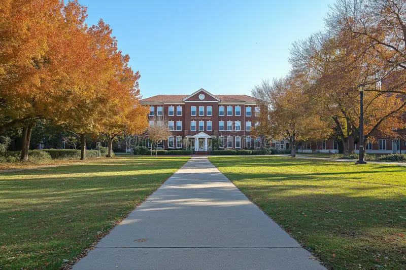

About the Institute
Bharat college of Technology was founded to bridge the divide between scientific rigour and humanistic breadth.

The institute’s founding charter established four enduring principles: research primacy, faculty governance, continuous revision and structural interdisciplinarity.
These principles continue to shape Bharat college of Technology’s academic structure and institutional culture.
Establishment of the institute and development of experimental teaching methods.
Expansion of research infrastructure and formalisation of interdisciplinary clusters.
Emergence as a globally recognised research-intensive institution.